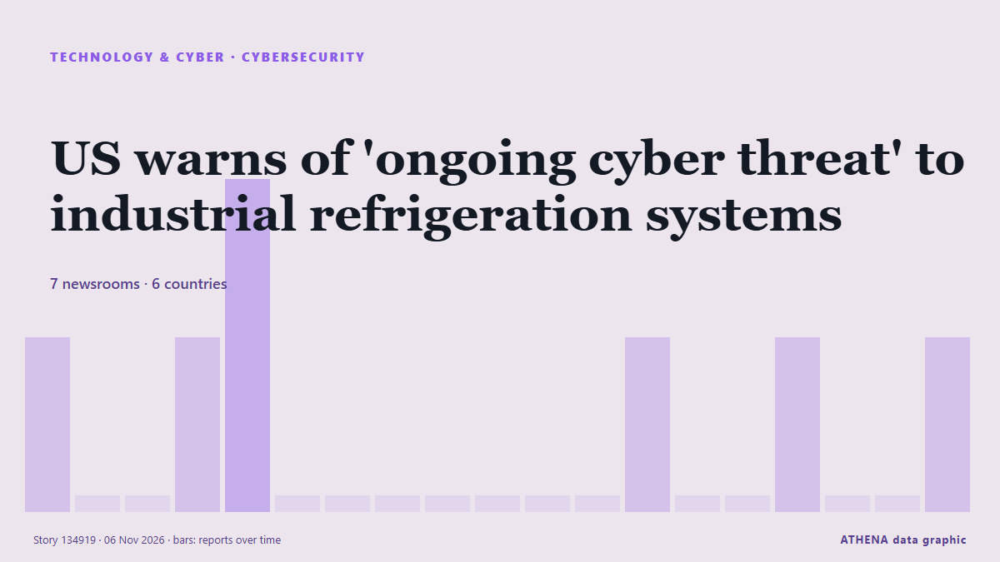

Cybersécurité
SponsoriséPrésenté par  Cybernetics and Artificial Intelligence Lab Welcome to the Cybernetics and Artificial Intelligence Laboratory, established at the Department of Business Administration of the National and Kapodistrian University of Athens. The lab is headed by Professor Dimitrios Thomakos. The lab aims to do research that can be published in top venues. Our research uses tools and methods of Artificial Intelligence, and lies in the following areas: - Forecasting - Decision making - Cyber security - Finance We are always looking forward to collaborating with exceptional students!
Cybernetics and Artificial Intelligence Lab Welcome to the Cybernetics and Artificial Intelligence Laboratory, established at the Department of Business Administration of the National and Kapodistrian University of Athens. The lab is headed by Professor Dimitrios Thomakos. The lab aims to do research that can be published in top venues. Our research uses tools and methods of Artificial Intelligence, and lies in the following areas: - Forecasting - Decision making - Cyber security - Finance We are always looking forward to collaborating with exceptional students!
| 24 oct. | 0 |
|---|---|
| 25 oct. | 0 |
| 26 oct. | 0 |
| 27 oct. | 0 |
| 28 oct. | 0 |
| 29 oct. | 1 |
| 30 oct. | 0 |
| 31 oct. | 2 |
| 1 nov. | 1 |
| 2 nov. | 7 |
| 3 nov. | 6 |
| 4 nov. | 5 |
| 5 nov. | 2 |
| 6 nov. | 0 |
Les titres sont affichés en anglais, tels que publiés.

US warns of 'ongoing cyber threat' to industrial refrigeration systems
Urges industrial refrigeration control system operators to apply software updates, pull devices off public internet. de Express Tribune
European supermarket fridges were hacked. How did it happen? Find out here
How did equipment used to keep food cold become a target for hackers - and what do we know about how they got in? de RTÉ News
Chainalysis discloses data breach from "offensive agentic techniques"
Blockchain analytics firm Chainalysis disclosed a data breach after attackers used "offensive agentic techniques" to access internal systems and tools, exposing customer names, email addresses, user… de BleepingComputer
Missed calls puzzle Telstra customers
Telstra says a hack or cyber breach is not to blame for customers receiving mystery missed calls. de Sydney Morning Herald
British adventurer Karl Bushby completes 28-year walk around the world
On November 2, Karl Bushby finished his 28-year walk back to his English hometown of Hull. de NBC News (World)
Cyberattack hits French blood banks
Three blood banks have detected and reversed a potentially destructive temperature spike in their cold rooms, following a cyberattack that targeted a refrigeration equipment provider of the French… de Help Net Security
Google dismantles botnet secretly running on 1.3 million Android TV boxes
Google has cut ties with the company behind the botnet campaign. de Ars Technica
mSecure Warns Users to Change Passwords, Reset 2FA and Passkeys After Suspicious Activity
Customers of the mSecure password manager are being urged to act now to protect the confidential information they store in it, possibly by changing passwords, resetting two-factor authentication… de The Hacker News
UK Must Expect AI-Powered Attack on Critical Infrastructure Within Two Years: Report
Britain should be prepared for an AI-powered cyberattack on its critical national infrastructure in the next two years, the UK’s National Cyber Security Centre said on Tuesday, adding that China was… de Insurance Journal
Here's what to know about another cyberattack on European supermarket fridges
Experts say outdated technology and weak passwords are to blame. de PBS NewsHour
European supermarkets rush to patch vulnerabilities after region-wide fridge hack
EU cybersecurity agency says attacks underscore importance of European cooperation, rapid information-sharing. de Express Tribune
Armed forces monitoring daily cyber threats to protect national security
MELAKA: The armed forces are closely monitoring and preventing cyber threats to ensure they are dealt with effectively, safeguarding the country's security and sovereignty. de New Straits Times
UK meat processing firms hit amid fridge and freezer cyber attacks
It has emerged that the cyber attack on French supermarket fridges involved legacy technology connected to internet with default passwords. de Evening Standard (London)
Supermarket freezers in several European countries hit by apparent cyberattacks
Supermarkets in Sweden, Belgium, Luxembourg, Ireland and Estonia were hit Monday by problems with freezers and fridges that apparently were caused by cyberattacks, forcing some to dispose of ruined… de The Canadian Press (via CityNews)
Europe on alert after supermarket freezers hit by cyber-attacks in 10 countries
Supermarkets have reported problems from Estonia and Sweden to Portugal and Italy and many retainers have been forced to discard food. de BBC News
Fridge cyberattack hits supermarkets across Europe
Grocery stores in at least five European countries saw temperatures in their cold cases soar on Monday, with several confirming they had been hit by a cyberattack similar to one three weeks ago in… de Dawn
Greek butcher shop reports cyberattack targeting refrigeration systems
Hackers allegedly gain access to refrigeration control system, set the temperature to 302F. de Anadolu Agency (English)
Suspected cyberattack sends Swedish supermarket freezers to 50C
The temperature of freezers at several Swedish grocery stores rose sharply overnight, operators ICA and Coop said on Monday, with at least one store blaming the incident on a cyberattack. de Cyprus Mail
'Noticeable' spike in Dunedin car thieves targeting Subaru vehicles
Police say there is little or no sign of forced entry in many cases, and offenders are instead exploiting known vulnerabilities in some vehicle models. de RNZ National